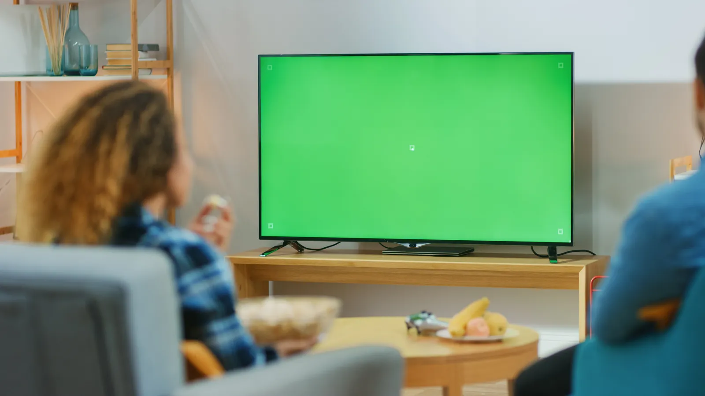

How the light tracking and drawing engine works
BriteKind's core loop is simple to describe and demanding to build: find the brightest spot in every camera frame, turn those points into a smooth line and do it fast enough that the child never sees a delay. Here is how we approach each layer.
What does the tracking pipeline look like?
The pipeline has five stages: capture a camera frame, find the brightest region, check it is really the flashlight, smooth the point and add it to the current stroke. Everything runs on the device, and only the drawn line is rendered on screen. Camera frames are discarded as soon as they are analyzed.
| Stage | What it does | Main iOS building block |
|---|---|---|
| 1. Capture | Streams frames from the front or rear camera | AVCaptureSession with a video data output |
| 2. Detect | Finds the brightest pixels in a downscaled frame | Luma (Y) plane scan, or Core Image reduction |
| 3. Validate | Rejects lamps, windows and reflections | Blob size, brightness and jump-distance checks |
| 4. Smooth | Removes jitter from hand movement | Exponential smoothing, then spline fitting |
| 5. Render | Draws the stroke in the selected colour | Core Animation shape layers or Metal |
How should the app capture camera frames?
Use AVCaptureVideoDataOutput and ask for the bi-planar YUV pixel format instead of BGRA. Brightness lives in the Y plane, so the detector can read one byte per pixel and ignore colour entirely. Set the output to discard late frames, because a stale frame is worse than a skipped one when you are drawing live.
Apple's technical note on handling frame drops with AVCaptureVideoDataOutput explains why processing must finish inside the frame budget and what happens to the queue when it does not. The brief's requirement, a frame rate that is not processor intensive, is a direct consequence: tracking at 30 frames per second on a reduced image is smoother overall than trying for 60 and dropping frames.
// Simplified: find the brightest blob in the luma plane
let step = 4 // sample every 4th pixel
var sumX = 0, sumY = 0, count = 0
for y in stride(from: 0, to: height, by: step) {
for x in stride(from: 0, to: width, by: step) {
if luma[y * rowBytes + x] >= threshold { // e.g. 240 of 255
sumX += x; sumY += y; count += 1
}
}
}
guard count >= minBlobSamples else { return nil } // ignore specks
return CGPoint(x: Double(sumX) / Double(count),
y: Double(sumY) / Double(count))This is the same idea as the binary thresholding covered in OpenCV's image thresholding tutorial, done by hand on a downscaled grid. Core Image's area maximum filter is an alternative when you prefer GPU reduction over a CPU loop.
How do you stop lamps and windows being tracked?
A flashlight is not the only bright thing in a living room. Ceiling lights, windows, TV screens and reflections all cross a brightness threshold. Three checks remove most of them: a maximum blob size (a window is huge, a flashlight beam is small), a maximum jump between frames (a hand cannot move across the room in 33 milliseconds) and a short calibration on start that records static bright areas and ignores them.
This is also why the app tells families to play in a dark room. The 50% dark overlay helps the drawing stand out, but the darkness the detector needs is in the room itself.
How is the line kept smooth?
Raw centroids jitter, so the engine smooths in two passes. First, an exponential moving average on each point removes hand shake. Second, the stroke is drawn as a curve through the points instead of straight segments, as the brief asks. A Catmull-Rom spline is a good fit because it passes through every tracked point and converts easily into the cubic Bezier segments that iOS drawing APIs expect.
Keep the rendering cost flat as the drawing grows. Draw the live stroke as a shape layer, and when a stroke ends, flatten it into a bitmap layer underneath. Otherwise a long drawing session ends with thousands of path points being redrawn every frame, and the device heats up.
How does the child select colours without touching the screen?
The dock uses dwell selection: when the light stays inside a dock target for a set time, the action fires. While the light waits, the target animates, for example a colour ring filling up or the clear icon wiggling, so the child understands that holding still is doing something. The trail is never drawn inside the dock area.
Tune the dwell time with children, not with the team.
Too short and children trigger Clear by accident and lose their drawing. Too long and they give up before a colour changes. Start near one second and adjust from real play sessions.
How does the TV mode work?
The simplest version is screen mirroring over AirPlay to an Apple TV, which needs no extra code. A better version treats the TV as a second display: the iPad keeps the camera view and controls, while the TV shows a clean, full-screen canvas. Apple's WWDC session Reaching the Big Screen with AirPlay 2 covers the options and their trade-offs.

The MVP was built by an outside studio from the written brief, with the code delivered in a repository for future development. Our guide on who should build your MVP covers when a studio, a freelancer or an in-house developer is the better choice, and what to put in the contract so you own the code and IP.